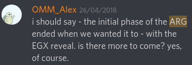
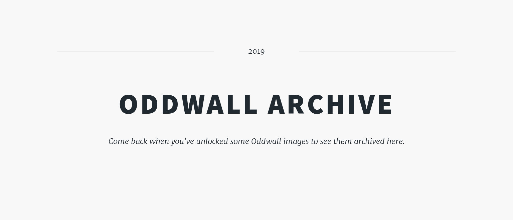
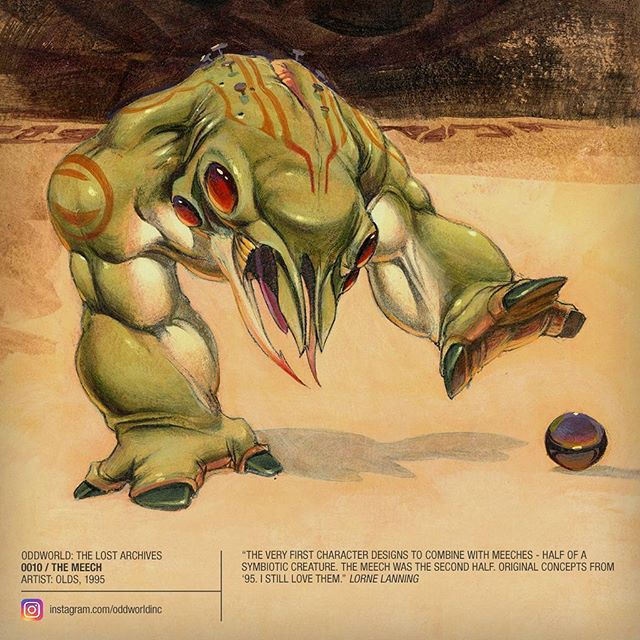

Throughout the years, there have been several projects started by OWI, which were shut down or simply abandoned way before they could reach proper maturity.
On this page I'd like to recount these, along with a small description for each, so that they won't be completely lost to history.
ARG Picture 5
(Around February 2017 -
Around July
2017 and April 2018)

Web Archive link for the curious.
Back in early 2017, before the first video teaser was released, there were five images teased that the community could unlock. However, if one would go and check Soulstorm's site, they would find that there are only four slots there. The fifth mysteriously disappeared with OWI saying that the ARG proceeded as planned.
Oddwall
(May 2019 - June 2019)

Supposedly not cancelled, just shelved because they don't have "something of interest" to show the community, the Oddwall was a community game consisting of an image obscured by differently sized tiles and a more or less weekly poll about which one of these tiles should be revealed. Some sections were only unlocked after a certain number of subscribers were obtained on OWI's social media pages.
Lore tidbits
(July 2018)
In July, 2018 OWI released a page titled Queens sharing concept art and lore tidbits about Oddworld's queens, who are some of the most influental characters, despite not appearing in the games yet.
The page launched with only Sam, the Mudokon queen's page, but over a few weeks it was updated several times with new images and pages for the other two queens Margaret and Skillya.
While the community enjoyed the previously unseen concept art, the page's content received minor criticism over its factual inaccuracies. (For example, painting Lady Margaret as a ruthless villain, unfeeling for her sons, instead of the original concept where she was both a cruel businesswoman and a loving mother. Molluck's fall was especially painful because he was Margaret's prodigal child.[1]) OWI, however, has claimed the content to be correct, which implies retconning or not wanting to give away plot points which only the fans who read old interviews could find.
Lost Archives
(December 2017 - April 2019)

The Lost Archives were one of the most ambitious recent projects of OWI. They set out to release images never yet seen on their Instagram page and they did it quite often, at times we could expect a new image daily. I made a page where fans can view all of these images.
However, one day the flow of images started to ebb and then stopped completely, leaving us with neither an explanation nor our usual share of pictures. As of this page's writing, it's been almost seven months since the last Lost Archives-related post.
Oddcast
(April 2018 - Around July 2019)
An episode of the Oddcast, archived by Magog on the March. The rest can also be found on this channel.
The Oddcast was the name of a free-form podcast OWI released every few months on a dedicated channel on their official Discord. But after only a few episodes, because of what I suspect to be lack of interest or perhaps lack of topics to speak about, the project stopped and recently the room too was deleted without a trace.
Wiki
(August 2018 - Ongoing)
The Wiki started as a fan initiative to unify the several already existing wikis about Oddworld into one peer-reviewed, trustable source of lore and information. Official talks about it began in late August of 2018, but until very recently there was very little public development on this front.
In June of 2019 OWI announced that they will soon launch the Wiki, with Xavier, owner and maintainer of several prominent Oddworld information databases and me as its curators.
However, despite the wiki being fully functional, with several pages having written beginnings and multiple promises from OWI, the wiki project is still not live.
Dear Alf
(October 2000 - December 2004,
February 2011 -
July 2014, January
2017, April 2019)
&
The Oddworld
Newsletter
(April 2019 - July 2019)

Compared to the old Dear Alf posts' 8-10 questions and answers, this feels rather lacking.
Dear Alf was an online Q&A series in which Lorne Lanning answered fan questions from the in-universe perspective of Alf, Abe's friend. The series lasted remarkably long from the very early days till 2014, when it abruptly ended.
Three years later Alf suddenly appeared again and answered another set of questions, ending his post with: "That’s it for this week, pals – there’re a lot of things I need to catch up on around here, but I’ll be back next week answering more of your burning questions." Despite this promise, it took him one and a half year to appear again.
His next cameo was in the third issue of the newsletter OWI announced around in April of 2019. These issues contained seveal sections, mostly highlighting specific developers or recent happenings. Alf's appearance was teased in the second newsletter, asking people to ask questions which will be answered soon. And as promised in the third newsletter a new section, also titled Dear Alf appeared, where he answered a few questions. These answers (picture above) were, however, subdued both in tone and quantity compared to the old series, in which Alf answered around 10 questions every time, giving us insight into the perhaps bit more mundane, but just as interesting parts of Oddworld. These old questions and answers can be found here.